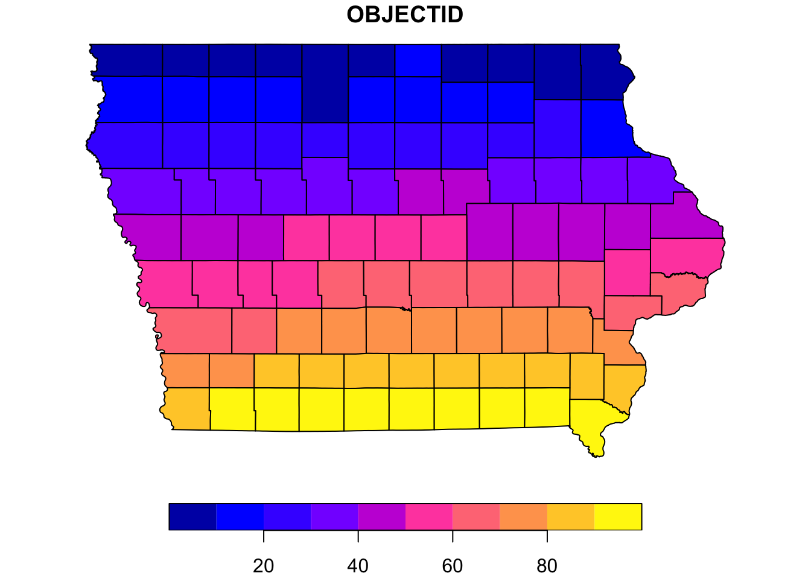
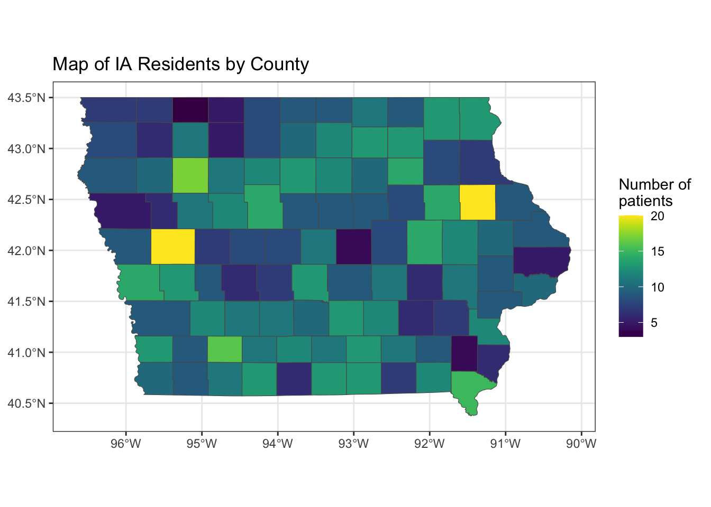

Chapter 1 Geographic (GIS) data analysis
One really useful way to illustrate data is through making maps. Here’s an example based on a real project I did in 2022 (data are available in the data/ subfolder of this repository).
Suppose that a principal investigator (PI) wants to study access to care through teledentistry. The specific research question is something like, “in a population of patients treated at my dental clinic from January 2021 - May 2023, what were the patterns in the relationships between 1) the distance traveled to the clinic, 2) the mode of the intake exam (in-person or virtual), and 3) treatment completion within 6 months (yes or no). Suppose further that I (the analyst) have access to the county in which each person lives, in addition to the clinical information relevant to our research in the electronic dental records.
Let’s start by loading all the libraries we’ll need:
library(dplyr) # package for 'wrangling' data
library(sf) # package for analyzing GIS data
library(ggplot2) # package for drawing plots/graphs
library(viridis) # package for choosing good color palettes
library(knitr) # package for making tablesAfter loading libraries, the first thing I would do is look online to find publicly available data with Federal Information Processing Standard (FIPS) codes for Iowa at the county level. I will use the R package sf to handle GIS data, which often comes in .shp or GeoJSON formats. Data in these sorts of files have what we need to draw a map of Iowa with the counties demarcated on the map.
## Reading layer `IowaCounties' from data source
## `/Users/tabithapeter/Desktop/ra_reference_manual/data/Iowa_County_Boundaries.geojson'
## using driver `GeoJSON'
## Simple feature collection with 99 features and 9 fields
## Geometry type: MULTIPOLYGON
## Dimension: XY
## Bounding box: xmin: -96.63944 ymin: 40.37566 xmax: -90.1401 ymax: 43.50109
## Geodetic CRS: WGS 84# must create a 'geometry' object
ia_geom <- st_geometry(ia)
# Note: in 'ia', O'Brien county is labeled as 'Obrien'-- as is often the case,
# special characters like apostraphes need special handling
ia |> dplyr::filter(substr(CountyName,1,1) == "O")## Simple feature collection with 2 features and 9 fields
## Geometry type: MULTIPOLYGON
## Dimension: XY
## Bounding box: xmin: -95.86234 ymin: 42.90917 xmax: -95.38744 ymax: 43.50024
## Geodetic CRS: WGS 84
## OBJECTID PERIMETER DOMCountyID FIPS FIPS_INT CountyName StateAbbr
## 1 2 130929.6 72 19143 19143 Osceola IA
## 2 13 154085.1 71 19141 19141 Obrien IA
## SHAPE_Length SHAPE_Area geometry
## 1 1.434543 0.1148673 MULTIPOLYGON (((-95.86089 4...
## 2 1.639165 0.1640720 MULTIPOLYGON (((-95.86193 4...# This is important - we will need to adjust our data later on to make things match.
# But first, let's create a test plot to make sure the map looks right.
par(mar = c(0,0,1,0))
plot(ia[1], reset = FALSE) # reset = FALSE: we want to add to a plot with a legend
This sample map is the correct shape – here, the 99 counties are colored according to their index (1-99). We want to make a map where the colors correspond to the number of patients representing each county.
Supposing one has access to electronic dental records, the data for such a study may look like this:
# read in CSV file that gives me county names
key <- read.csv("data/ia_counties.csv") |>
# narrow down to only IA (for sake of example)
dplyr::filter(State == "IA") |>
# address the issue with the special character in O'Brien
dplyr::mutate(NAME = dplyr::if_else(NAME == "O'Brien", "Obrien", NAME))
# now simulate mock data for our example
# note: TD = teledentistry
set.seed(52242)
td <- data.frame(
# creating data from 1000 pretend IDs
id = 1:1000,
# randomly choose a year for each ID
year = sample(2021:2023, 1000, replace = TRUE),
# randomly choose an outcome for each ID
# (complete or incomplete, represented as 1 or 0)
complete = sample(0:1, 1000, replace = TRUE),
# randomly choose a county for each ID
county = sample(key$NAME, 1000, replace = TRUE),
# randomly choose a model for each ID
mode = sample(c("virtual", "in-person"), 1000, replace = TRUE)
)
# see what these data look like:
head(td) |>
# note the use of the 'kable()' function from the 'knitr' package below:
# this is another great tool for making tables, when you want to see a
# glimpse of the data
knitr::kable(caption = "Simulated data from electronic dental records")| id | year | complete | county | mode |
|---|---|---|---|---|
| 1 | 2021 | 0 | Howard | virtual |
| 2 | 2021 | 1 | Clay | in-person |
| 3 | 2021 | 0 | Palo Alto | virtual |
| 4 | 2022 | 0 | Buchanan | virtual |
| 5 | 2022 | 0 | Obrien | virtual |
| 6 | 2023 | 1 | Floyd | virtual |
Now, I am ready to create a map that will communicate to my collaborators where our patients are driving from to receive their treatment.
# determine how many patients in each county
td_summarize <- td |>
group_by(county) |>
summarise(N = n()) |>
ungroup()
# add fips codes (from GeoJSON file)
td_summarize <- right_join(td_summarize, ia,
by = c("county" = "CountyName"))
# create sf object (for drawing a map)
map <- td_summarize |>
st_as_sf()
# draw the map
ggplot() +
geom_sf(data = map,
aes(fill = N)) +
scale_fill_viridis() +
labs(title = "Map of IA Residents by County", fill = "Number of \npatients") +
theme_bw() 